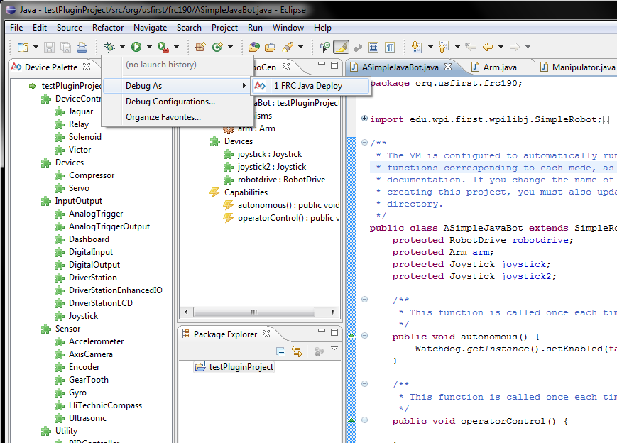
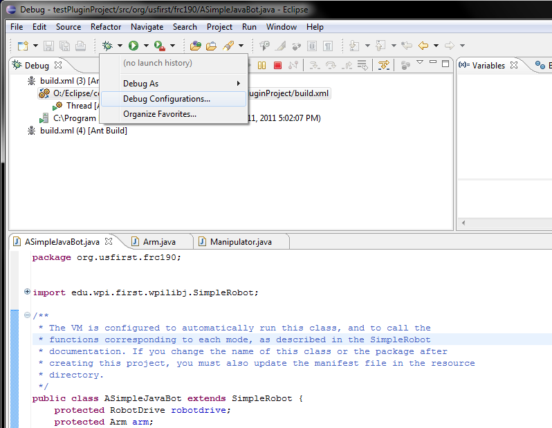
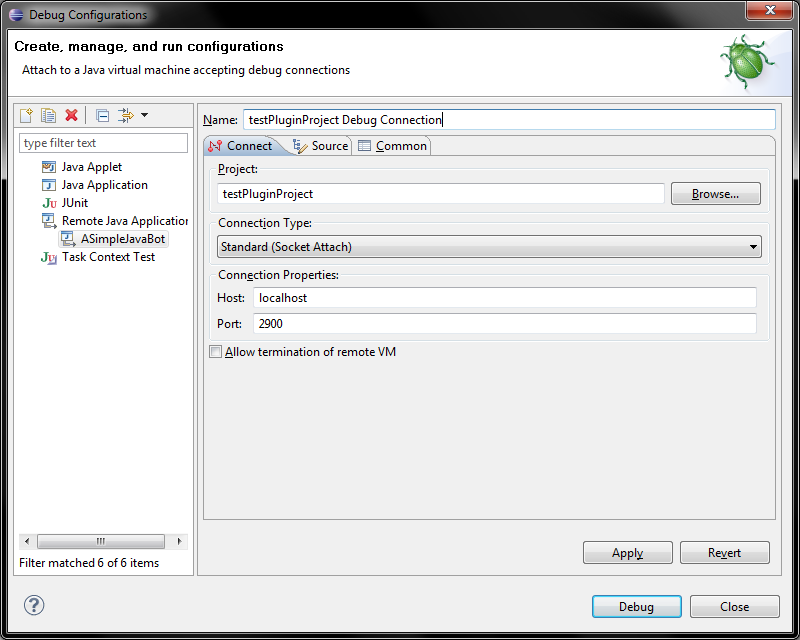
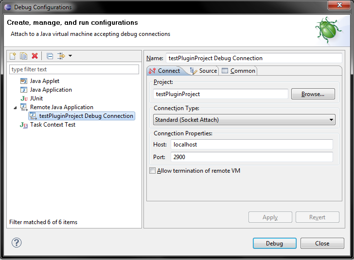

To run an FRC Project in debug mode, first select the project and select "Debug As...-> FRC Java Deploy". This will launch the project in the same way deploy does, and additionally open the debug perspective.
Once the debug perspective is open, select "Debug Configurations..." from the Debug toolbar.
Select "Remote Java Application" from the left side menu and click "New". You will be presented with a window asking for a project, connection type, host, and port. The project should be the proejct you launched. The connection type is "Standard (Socket Attach)". The host is "localhost". The port is usually 2900 - to check this, look at your console window, there should be an output saying "trying to connect on port 2900", or another number. if the number is different, use it instead of 2900. The should be something which indicates that this is the debug connection for the project you are launching - each project will need its own.
Once those fields are properly filled in, click "Debug". The configuration will launch and connect to the cRio. In the future, if you wish to debug the same project, the configuration you created will appear under "Remote Java Application" in the "Debug Configurations..." dialog box, as shown below.
